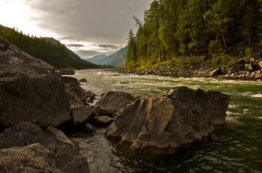

@michelesantolin
Lindo riozinho que sai do coração da Cordilheira Beartooth.
Um dos rios mais belos do estado de Big Sky.
É um pequeno rio de fluxo rápido que deságua no rio Yellowstone logo acima de Columbus, MT.